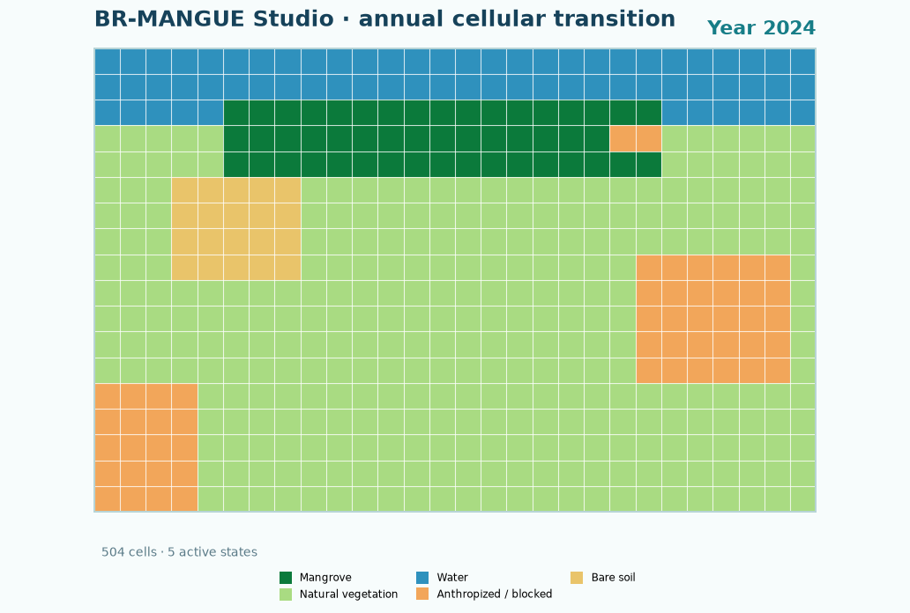

Prepare the inputs
Load a categorical land-cover raster and a digital elevation model on the same grid. A study-area mask and suitability layer are optional.
Open-source research software
BR-MANGUE Studio is a desktop application for running spatial cellular-automaton scenarios with land-cover and elevation data you provide.

What you can do
The application brings data setup, model settings, processing, and results into one desktop workspace.
Load a categorical land-cover raster and a digital elevation model on the same grid. A study-area mask and suitability layer are optional.
Map source classes to model states, choose the simulation years, and configure sea-level forcing and other model parameters.
Inspect annual maps, trajectories, class transitions, and run metadata saved with the project.
A simple workflow
Select land-cover and elevation GeoTIFFs with matching extent, resolution, and coordinate system.
Assign each source category to a model state or exclude it from the scenario.
Set years and use a constant rate or a calendar-based sea-level trajectory.
Compare yearly maps and tables, then keep the run metadata with the outputs.
Research workflow
Each run works with user-provided inputs and writes its outputs to the selected project folder. Input rasters remain unchanged.
See the output files →Learn more
The model's scientific basis and software attribution are documented in the research and citation page and in the source repository.
Free and open source
Choose the desktop package for your operating system and review its requirements.